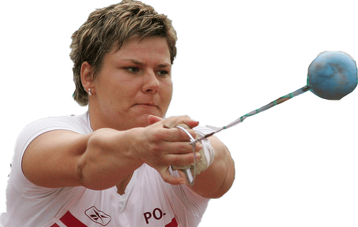

Kamila Skolimowska

Polska lekkoatletka uprawiająca rzut młotem, złota medalistka igrzysk olimpijskich w 2000, w Sydney, policjantka w stopniu sierżanta.
W wieku niespełna 14 lat zdobyła złoty medal seniorskich mistrzostw kraju ustanawiając zarazem rekord Polski. Już jako młodziczka osiągnęła poziom międzynarodowy (10. miejsce na listach światowych seniorek w 1997). W tym samym roku zdobyła tytuł mistrzyni Europy juniorek, a dwa lata później złoty medal mistrzostw świata juniorów młodszych. Startując w wieku niespełna osiemnastu lat na Igrzyskach Olimpijskich w Sydney dość nieoczekiwanie została mistrzynią olimpijską z wynikiem 71,16 m.
Późniejsze jej starty w igrzyskach olimpijskich i mistrzostwach świata nie przyniosły już medalowych sukcesów. Najwyższe, czwarte lokaty zajęła podczas mistrzostw świata w Edmonton (2001) i Osace (2007). Na igrzyskach olimpijskich w Atenach (2004) wywalczyła 5. miejsce, natomiast cztery lata później w Pekinie start w finale zakończyła bez wyniku, paląc wszystkie trzy próby (był to jedyny występ w karierze Skolimowskiej, w którym uległa późniejszej rekordzistce świata – Polce Anicie Włodarczyk). Jedynie w mistrzostwach Starego Kontynentu udało się jej sięgnąć po medale – w 2002 roku wywalczyła srebro, zaś w 2006 brąz. 12-krotna mistrzyni Polski – ostatnio w 2008 (wyniki). Jej rekord życiowy – 76,83 m został uzyskany 11 maja 2007 w Dosze podczas mityngu Super Grand Prix IAAF. Zawodniczka osiągając ten rezultat pobiła poprzedni swój najlepszy wynik o 1,54 m. W historii kobiecego rzutu młotem lepszy rezultat zanotowało 10 zawodniczek (w momencie uzyskania wyniku Skolimowskiej lepsze rekordy życiowe miały 3 młociarki).
Osiągnięcia
Igrzyska Olimpijskie
| Złoto |
Sydney 2000 |
Rzut młotem |
Mistrzostwa europy
| Złoto |
Bydgoszcz 2003 |
Rzut młotem |
| Złoto |
Lublana 1997 |
Rzut młotem |
| Srebro |
Monachium 2002 |
Rzut młotem |
| Brąz |
Göteborg 2006 |
Rzut młotem |